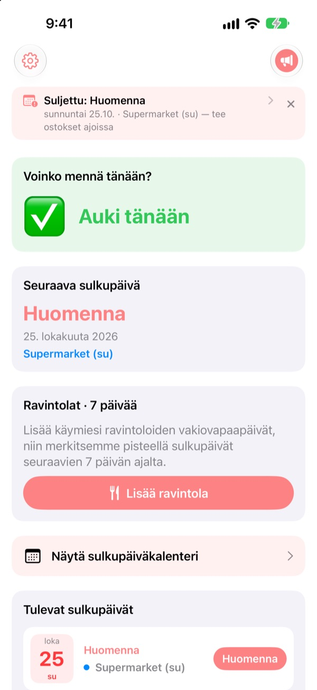
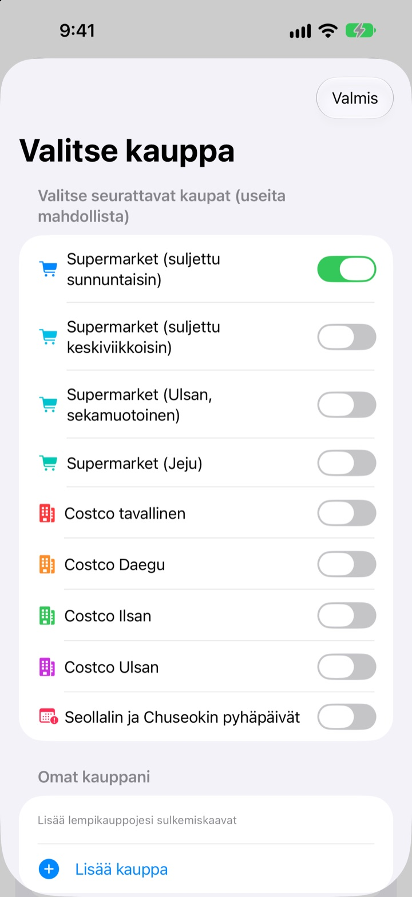
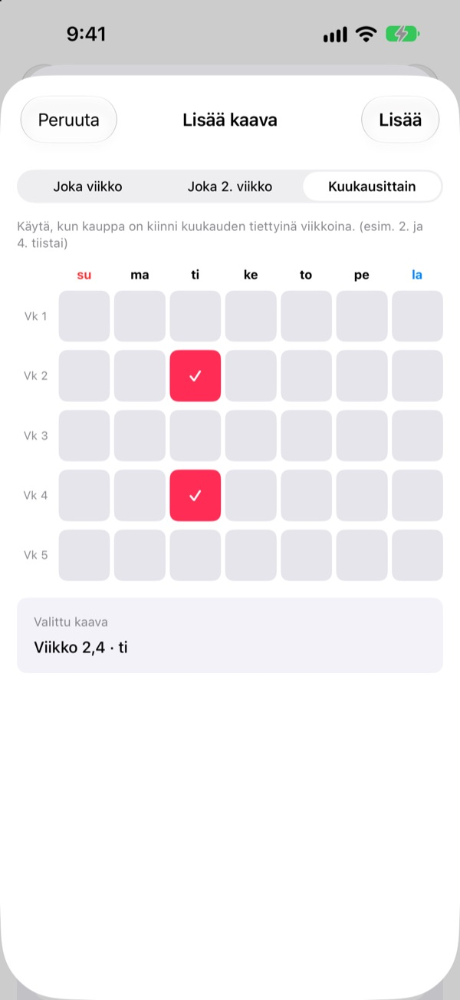
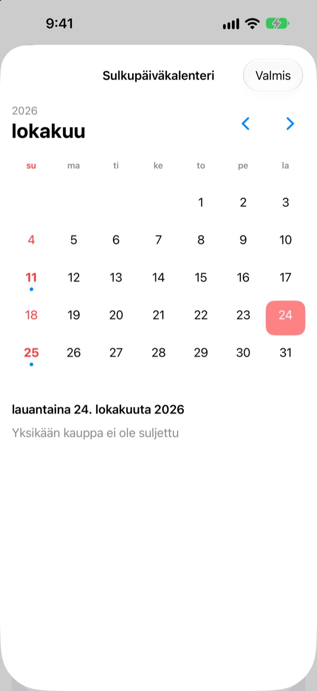
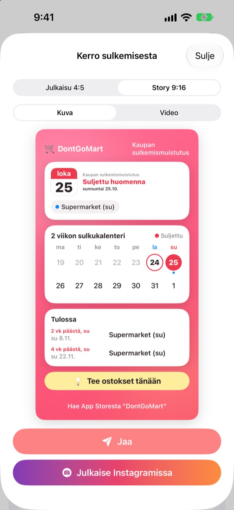

Ennen kauppareissua
tarkista, onko auki
Kun avaat apin, näet ensimmäisenä, ovatko valitsemasi kaupat tänään auki. Ennen jokaista sulkupäivää tulee muistutus, joten et enää törmää lukittuun oveen.
Kaikki ominaisuudet ovat ilmaisia. Ei tiliä, ei mainoksia.

Kokeile omalla kaupallasi
Valitse kauppa ja näe heti, onko se tänään auki ja milloin se seuraavan kerran sulkee. Laskenta noudattaa samoja sääntöjä kuin appi.
Oletko joskus saapunut ostoslistan kanssa suljetulle ovelle?
Korean suurten supermarkettien on oltava kiinni kaksi päivää kuussa, mutta mitkä päivät, riippuu paikasta. Useimmiten kuun toinen ja neljäs sunnuntai, muualla keskiviikko, ja Ulsanilla ja Jejulla on omat sääntönsä. Costcossa se riippuu myymälästä. DontGoMart laskee sulkupäivät kauppojesi sääntöjen mukaan ja kertoo ensimmäiseksi, voitko lähteä tänään.
Oikein joka alueella
Valitse sunnuntaisin tai keskiviikkoisin sulkevat kaupat tai alueet, joilla on oma aikataulu, kuten Ulsan ja Jeju. Tavalliset Costco-myymälät sekä Daegun, Ilsanin ja Ulsanin myymälät asetetaan erikseen.
Myös Seollalin ja Chuseokin päivän sulkemiset näkyvät, ja voit seurata useaa kauppaa kerralla.

Lähikauppasi ja kantaravintolasi
Jos kauppa puuttuu listalta, lisää se itse: joka viikko, joka toinen viikko tai minä kuun viikkoina ja minä päivänä se sulkee.
Ravintolaa varten liitä Naver Mapista jaettu linkki tai valitse kuvakaappaus sen tietosivusta, niin vakituiset vapaapäivät täyttyvät itsestään. Kuvien teksti luetaan vain laitteellasi.

Muistutukset ja widgetit, ettei unohdu
Saat muistutuksen 1, 2, 3 tai 7 päivää etukäteen haluamaasi aikaan, ja edellisenä päivänä vielä toisen siitä, että tänään on hyvä päivä käydä kaupassa.
Koti-valikon ja lukitusnäytön widgetit näyttävät seuraavan sulkupäivän, onko tänä sunnuntaina auki ja ravintoloidesi seuraavat seitsemän päivää. Kalenteri näyttää koko kuukauden.

Jaa yhdellä kortilla
Tee tiedosta kortti, jossa on kahden viikon kalenteri ja ostosvinkki, ja lähetä se perheen chattiin. Mukana koot Instagram-julkaisulle ja -tarinalle sekä lyhyt video.

Alkuun kolmella askeleella
- 1
Valitse kaupat
Laita päälle kaupat ja alueet, joissa asioit. Niin monta kuin haluat.
- 2
Laita muistutukset päälle
Valitse, montako päivää etukäteen ja mihin aikaan.
- 3
Lisää widget
Tarkista Koti-valikosta tai lukitusnäytöltä avaamatta appia.
Kauppakohtaiset sulkusäännöt
- Supermarket (suljettu sunnuntaisin)
- Kuun 2. ja 4. sunnuntai · useimmat alueet
- Supermarket (suljettu keskiviikkoisin)
- Kuun 2. ja 4. keskiviikko · osa Gyeonggia, Cheongju
- Supermarket (Ulsan)
- 2. keskiviikko, 4. sunnuntai
- Supermarket (Jeju)
- 2. perjantai, 4. lauantai
- Costco tavallinen
- Kuun 2. ja 4. sunnuntai
- Costco Daegu
- Kuun 2. ja 4. maanantai · Daegu, Daegu Innovation
- Costco Ilsan
- Kuun 2. ja 4. keskiviikko
- Costco Ulsan
- 2. keskiviikko, 4. sunnuntai
- Seollal, Chuseok
- kiinni itse juhlapäivänä
Pakolliset sulkupäivät päättävät paikallisviranomaiset, ja ne voivat muuttua. Jos jokin ei täsmää, kirjoita meille alla olevaan osoitteeseen.
Usein kysyttyä
Sulkupäivät eivät täsmää todellisuuteen.
Pakolliset sulkupäivät määräytyvät paikallisten säädösten mukaan ja vaihtelevat alueittain. Tarkista asetuksista, että olet valinnut oikean kauppatyypin (suljettu sunnuntaisin, keskiviikkoisin, Ulsan, Jeju jne.). Jos se ei vieläkään täsmää, lähetä meille kaupan nimi ja alue, niin tarkistamme asian.
Kauppani ei ole listalla.
Lisää se omaksi kaupaksesi. Valitse joka viikko, joka toinen viikko tai minä kuun viikkoina ja minä päivänä se sulkee, esimerkiksi kuun toisena ja neljäntenä sunnuntaina.
Ravintolan vapaapäivät täyttyivät väärin.
Naver Map -linkistä tuotaessa ravintolan sivulla on oltava vakituiset vapaapäivät. Kuvakaappausta käyttäessä varmista, että sulkemismaininta näkyy ruudulla. Voit korjata kaiken ennen tallennusta.
En saa muistutuksia.
Tarkista, että ilmoitukset on sallittu kohdassa Asetukset > Ilmoitukset > DontGoMart ja että muistutukset ovat päällä apissa.
Widget ei päivity.
Kun avaat apin kerran, widgetit päivittyvät. Jos ei auta, poista widget ja lisää se uudelleen.
Mitä tipit ovat?
Kaikki DontGoMartin ominaisuudet ovat ilmaisia. Kahvi, kakku ja ateria ovat tippejä kehittäjälle. Sen jälkeen saat kiitoksen ja merkin, jossa näkyy tippiesi määrä.
Mistä kysyn maksuista tai hyvityksistä?
Apple hoitaa sovelluksen sisäiset ostot, joten hyvitystä pyydetään osoitteessa reportaproblem.apple.com. Muissa asioissa kirjoita meille.
Miten tietojani käsitellään?
Ei tilejä, mainoksia tai seurantatyökaluja, ja kuvakaappausten teksti luetaan vain laitteellasi. Lisätietoja alla olevassa tietosuojakäytännössä.
Kysyttävää tai ideoita? Kirjoita osoitteeseen hyunho.lee.1993@gmail.com. Vastaamme yleensä päivän tai kahden sisällä.